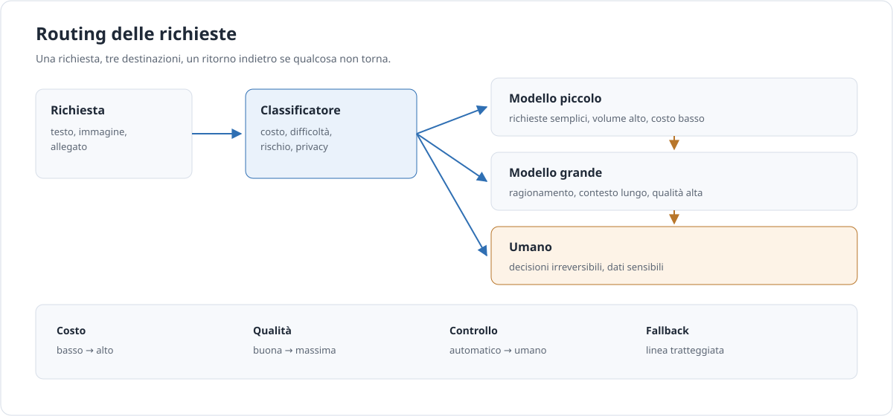

Approfondimento · AI
Modelli e routing
Il modello migliore non esiste. Esiste il modello giusto per un compito, un budget e un vincolo. Questa pagina spiega come sceglierlo, come farlo collaborare con altri e come instradare le richieste senza sprecare denaro.
In breve. Scegliere un modello è un problema di ingegneria, non di tifo. Servono una griglia di scelta, qualche numero misurato sul proprio caso e la possibilità di cambiare idea quando i prezzi o le versioni cambiano. Il resto è marketing.
Non esiste il modello migliore
Ogni classifica di modelli è una fotografia scattata da un certo angolo. Un modello può essere fortissimo in codice e mediocre in una lingua poco rappresentata nei dati di addestramento; può vincere un benchmark di matematica e perdersi su un documento di venti pagine. Il confine tra le capacità è frastagliato, e non coincide con il prezzo.
I benchmark, poi, saturano. Quando un test viene superato dal 90% dei modelli, non distingue più nulla: misura quanto bene i modelli sono stati ottimizzati su quel test. Un benchmark pubblico non dice niente sul tuo caso d’uso, sui tuoi documenti, sul tuo tono, sui tuoi errori accettabili.
Le dimensioni che contano davvero sono tre. La capacità: quanto il modello è bravo sul compito, non in generale. Il costo e la latenza: quanto costa ogni richiesta e quanto tempo impiega a rispondere, comprese le code e la rete. Il controllo: dove girano i dati, chi li vede, quale versione del modello resta ferma, quali garanzie hai sul trattamento.
Un’ultima distinzione, spesso confusa: modello grande non è sinonimo di modello di ragionamento. Il ragionamento è sempre più spesso una modalità o un parametro — una profondità di calcolo, un budget di pensiero — che si attiva sullo stesso modello. Un modello piccolo in modalità ragionamento può costare meno di un modello grande in modalità normale, e viceversa. Trattale come due leve separate.
I profili di modello
Invece di memorizzare nomi e versioni, conviene ragionare per profili. Un profilo è un insieme di caratteristiche che resta valido anche quando il modello specifico cambia.
| Profilo | Punti di forza | Limiti | Uso tipico | Cosa verificare |
|---|---|---|---|---|
| Generalista frontier | Buono quasi ovunque, regge compiti ambigui e istruzioni lunghe. | Costo alto, latenza variabile, versioni che cambiano. | Compiti misti, prototipi, casi difficili. | Prezzo effettivo, limiti di contesto, policy sui dati. |
| Piccolo e veloce | Costo basso, latenza bassa, adatto a volumi alti. | Fatica su ragionamenti lunghi e istruzioni intricate. | Classificazione, estrazione semplice, risposte brevi. | Qualità sul tuo set, non sul benchmark. |
| Ragionamento | Migliore su problemi a più passaggi e verifiche. | Costo e latenza maggiori, più token di output. | Analisi, debug, pianificazione, matematica. | Che il guadagno giustifichi il conto. |
| Contesto lungo | Legge interi contratti, repository o archivi. | Qualità non uniforme sul centro del documento; costo per token. | Revisione documentale, confronto tra testi. | Il punto di perdita dell’informazione, con un test. |
| Multimodale | Legge immagini, schermate, PDF scansionati, audio. | Dettagli piccoli e tabelle complesse restano fragili. | Estrazione da fatture, controllo di interfacce, trascrizioni. | Risoluzione minima e formato accettati. |
| Pesi aperti | Eseguito in casa, personalizzabile, nessun costo per token. | Serve hardware, competenza e manutenzione. | Dati sensibili, volumi costanti, ambienti offline. | Costo totale reale: macchina, energia, persone. |
| Embedding e reranker | Trasformano testi in vettori e riordinano i risultati. | Non generano testo; vanno valutati sul retrieval. | Ricerca interna, RAG, deduplicazione. | Recall sui documenti giusti, non solo similarità. |
| Classificatore o router | Decide in fretta etichetta o destinazione. | Sbaglia con sicurezza; va misurato con matrici di confusione. | Instradamento, triage, filtri economici. | Precisione sulle classi rare e costo degli errori. |
Tre dettagli tecnici cambiano il conto più di quanto sembri. La finestra di contesto non è il contesto utile: dichiarare un milione di token non significa usarlo bene. I token di output costano più di quelli di input, spesso diverse volte tanto, e un modello prolisso può annullare un risparmio sull’input. La cache del contesto, dove disponibile, riduce il prezzo della parte ripetuta, ma solo se il fornitore la offre e se il prefisso resta identico.
Scegliere per ambito
Una matrice non decide al posto tuo, ma impedisce di dimenticare una colonna. Guardala come un punto di partenza: la colonna “da verificare” è quella che conta.
| Ambito | Requisito dominante | Profilo di partenza | Da verificare | Rischio |
|---|---|---|---|---|
| Coding | Correttezza e contesto del repository | Generalista o ragionamento | Test eseguiti, non solo codice plausibile | Codice che compila e sbaglia |
| Documenti lunghi | Recupero di dettagli sparsi | Contesto lungo, con retrieval | Accuratezza su centro e fondo del testo | Dettagli inventati con tono sicuro |
| Estrazione e classificazione | Formato e ripetibilità | Piccolo, con schema rigido | Validazione automatica dell’output | Campi mancanti riempiti a caso |
| Assistenza clienti | Latenza e tono | Piccolo, con escalation | Frasi fuori policy, prezzi, promesse | Risposte sicure e sbagliate |
| Scrittura creativa | Voce e varietà | Generalista | Originalità, diritti, revisione umana | Testi piatti e cliché |
| Immagini e audio | Qualità percettiva | Multimodale | Formati, risoluzione, lingue | Dettagli illeggibili presi per buoni |
| Dati sensibili | Confine dei dati | Pesi aperti o contratto dedicato | Dove finiscono i dati e per quanto | Violazione di obblighi e fiducia |
| Decisioni ad alto impatto | Responsabilità e tracciabilità | Modello + revisore umano | Criteri, log, possibilità di appello | Automazione di una decisione non delegabile |
Prima di provare qualsiasi modello, rispondi a tre domande. Quanto costa un errore? Se costa poco, un modello piccolo con validazione automatica basta. Quale latenza è accettabile? Una risposta perfetta dopo quaranta secondi è inutile in una chat, preziosa in un’analisi notturna. Quali dati possono uscire dal perimetro? Questa risposta elimina intere categorie di fornitori prima ancora di guardare i prezzi.

Le leve pratiche
I parametri non rendono intelligente un modello, ma cambiano molto il risultato e il conto. Questi sono quelli che vale la pena conoscere, indipendentemente dal fornitore.
| Leva | Effetto | Rischio |
|---|---|---|
| Temperatura | Più alta, più varia l’output. | Instabilità su estrazione e classificazione. |
| Top-p | Limita la scelta ai token più probabili. | Interagisce con la temperatura: non muoverli insieme. |
max_tokens |
Tetto alla lunghezza della risposta. | Troncamento silenzioso di JSON e frasi. |
| Sequenze di stop | Chiudono la generazione a un marcatore. | Stop troppo generici troncano il contenuto. |
| Output strutturato | Forza schema e tipi. | Schema troppo rigido produce rifiuti o vuoti. |
| Effort o profondità | Più calcolo per risposte difficili. | Costo nascosto nei token di ragionamento. |
| Caching del contesto | Riduce il prezzo della parte ripetuta. | Si rompe se il prefisso cambia anche di poco. |
| Batch | Sconto in cambio di tempi più lunghi. | Non adatto a flussi interattivi. |
| Retry | Recupera errori transitori. | Duplica effetti se l’operazione non è idempotente. |
| Timeout | Evita attese infinite. | Taglia risposte lunghe ma valide. |
Il costo di una richiesta si stima così: (token di input ÷ 1.000.000 × prezzo input) + (token di output ÷ 1.000.000 × prezzo output), con i prezzi del fornitore. Ma il numero che conta è un altro: il costo per compito riuscito. Un modello economico che sbaglia una volta su tre costa più di un modello caro che sbaglia una volta su venti, se ogni errore richiede una persona che corregge.
Anche la latenza non dipende solo dal modello. Contano la rete tra te e il fornitore, la coda condivisa, la lunghezza del contesto da elaborare e la velocità di generazione, che si paga token per token. Un modello veloce su risposte brevi può diventare lento su risposte lunghe. Misura il tempo totale, non il tempo del primo token.
Quando hai una policy di parametri che funziona, il passo successivo è trasformarla in un comando riutilizzabile: ne parliamo in Prompt e comandi.
Modelli che lavorano insieme
Qui non cambia il ruolo degli agenti: cambia il modello. Sono pattern di composizione, utili quando un solo modello non copre bene costo e qualità insieme.
| Pattern | Beneficio | Costo | Quando |
|---|---|---|---|
| Cascata | Il piccolo risolve la maggior parte dei casi. | Il grande paga solo per i casi dubbi. | Quando esiste un segnale di confidenza affidabile. |
| Router | Una sola chiamata, alla destinazione giusta. | Un classificatore da addestrare o valutare. | Quando i tipi di richiesta sono pochi e distinguibili. |
| Verificatore | Un secondo modello controlla il primo. | Raddoppia le chiamate e la latenza. | Quando l’errore costa più della verifica. |
| Planner / esecutore | Un modello pianifica, uno esegue passi semplici. | Più passaggi e stato da gestire. | Compiti scomponibili in sottoproblemi chiari. |
| Ensemble o dibattito | Riduce la varianza su giudizi incerti. | Moltiplica i costi per ogni risposta. | Solo su decisioni rare e ad alto valore. |
| Distillazione | Un modello piccolo impara dal grande. | Serve un dataset e un ciclo di addestramento. | Quando il volume è alto e il compito stabile. |
La ricerca offre due punti di riferimento utili. RouteLLM mostra che un router addestrato può mantenere gran parte della qualità del modello forte spendendo molto meno. FrugalGPT mostra che una cascata con un criterio di uscita ben calibrato può ridurre il costo mantenendo la qualità. Sono risultati misurati su certi dataset, con certi modelli: non si trasferiscono automaticamente al tuo caso. Trattali come ipotesi da verificare, non come promesse.
Quando i modelli hanno ruoli diversi e si passano il lavoro, non sei più nel routing: sei nell’orchestrazione. La trovi in Agenti e orchestrazione.
Instradare le richieste
Un router è una funzione che, data una richiesta, sceglie dove mandarla. Può essere statico — una regola per tipo di compito — oppure dinamico, con un classificatore che guarda il contenuto. La versione più robusta è spesso un ibrido: regole esplicite per i casi noti, un classificatore per il resto, un fallback per quando il classificatore non è sicuro.
Una policy leggibile vale più di un prompt scritto in fretta. Questo esempio è neutro: i nomi dei modelli sono segnaposto.
{
"policy": "routing-2026-11",
"default": "small",
"rules": [
{ "when": "task in [coding, analisi-legale]", "route": "large" },
{ "when": "confidence < 0.6", "route": "reasoning" },
{ "when": "documento.riservato == true", "route": "local-open-weights" },
{ "when": "budget.giornaliero_consumato > 0.8", "route": "small" }
],
"fallback": ["small", "large", "reasoning", "umano"],
"budget": {
"per_richiesta_usd": 0.05,
"per_giorno_usd": 50
}
}Le regole vanno lette come decisioni di prodotto. “Se il budget è all’80%, usa il piccolo” significa che la qualità scende a fine giornata: è una scelta accettabile solo se lo hai deciso tu, non se lo scopre l’utente.
Le metriche da guardare sono poche e concrete:
- quota al modello piccolo: se è troppo bassa, il router non sta risparmiando;
- qualità rispetto al baseline: il baseline è il modello forte su tutti i casi;
- costo per richiesta riuscita, non per chiamata;
- p50 e p95 di latenza: la coda è ciò che l’utente ricorda;
- tasso di fallback: un fallback sempre attivo è un router inutile.
Strumenti come LiteLLM Router o il routing tra provider di OpenRouter fanno questo lavoro a un livello infrastrutturale. Sono esempi, non scelte obbligate: la stessa logica si può scrivere in cinquanta righe.
Attenzione. Il routing è anche una decisione di prodotto. Cambiare modello a metà conversazione può cambiare tono, formato e perfino policy. Se l’utente nota la differenza, hai un problema di coerenza, non di costo. E se i dati sensibili finiscono su un ramo che non doveva vederli, hai un problema più grande di entrambi.
Misurare, non indovinare
Un set di valutazione non deve essere grande: deve essere rappresentativo. Venti o cinquanta casi ben scelti, con gli errori che già conosci, battono mille casi casuali. Costruiscilo prendendo richieste reali, non inventate, e annota per ognuna la risposta attesa o i criteri con cui giudicarla.
La rubrica deve essere abbastanza concreta da poter essere applicata da due persone diverse con lo stesso risultato. “Buona risposta” non è una rubrica. “Cita la fonte, non inventa numeri, resta sotto le 150 parole, segnala i dati mancanti” lo è.
| Misura | Come si calcola | Soglia di allarme |
|---|---|---|
| Pass rate | Casi superati ÷ casi totali. | Calo di 5 punti rispetto alla versione precedente. |
| Costo per compito riuscito | Costo totale ÷ casi superati. | Crescita senza aumento di qualità. |
| p50 di latenza | Mediana dei tempi di risposta. | Oltre il limite percepito dall’utente. |
| p95 di latenza | Il 95% delle risposte è più veloce. | Coda doppia rispetto al p50. |
| Regressione | Confronto con la versione precedente sullo stesso set. | Qualsiasi caso prima superato e ora fallito. |
| Canary | Una quota di traffico reale sul nuovo modello. | Metriche di business peggiori del gruppo di controllo. |
Il canary non è un interruttore: è un confronto. Prima di accenderlo, decidi quale metrica deve restare stabile, quale può peggiorare e per quanto tempo osservare. Un cambio di modello che migliora la media ma peggiora i reclami è un peggioramento, anche se il punteggio di valutazione sale. E se non puoi tornare indietro in pochi minuti, non è un canary: è un salto.
Distingui la qualità media dalla coda peggiore. Un modello può avere una media eccellente e fallire proprio sui casi limite che ti costano di più. Guarda sempre la distribuzione, non solo il numero singolo. Un esempio completo di misura è in Laboratorio.
Errori comuni
- Usare sempre il modello più grande. È la scelta più semplice e quasi mai quella giusta.
- Inseguire i benchmark. Misurano il test, non il tuo compito.
- Un solo modello per tutto. Costo e latenza si pagano su ogni richiesta, anche su quelle banali.
- Ignorare i token di output. Sono la voce che cresce con la verbosità del modello.
- Confondere finestra di contesto e contesto utile. Riempire la finestra non migliora la risposta.
- Nessun fallback. Un modello che non risponde blocca tutto il flusso.
- Nessuna eval. Senza un set di riferimento, ogni cambio è una scommessa.
- Routing senza osservabilità. Se non sai quale ramo ha risposto, non puoi correggere niente.
Regola. Scegli il modello più piccolo che supera il tuo set di valutazione, poi sali di un gradino solo se i numeri lo giustificano. Il resto è margine che puoi spendere in verifica, non in token.
Lessico minimo
- Routing
- La scelta della destinazione di una richiesta: un modello, un altro modello, un servizio, una persona.
- Cascata
- Una sequenza di tentativi: si parte dal modello più economico e si sale solo se il risultato non basta.
- Fallback
- Il percorso alternativo quando la prima scelta fallisce, rifiuta o non è abbastanza sicura.
- Eval
- Un insieme di casi e criteri con cui misurare la qualità di un sistema AI, invece di giudicarla a impressione.
- p95
- Il valore sotto il quale cade il 95% delle misure: serve a guardare la coda lenta, non la media.
- Modello di ragionamento
- Un modello, o una modalità, che spende più calcolo prima di rispondere. Non è automaticamente migliore su tutto.
Fonti
- Anthropic, Choosing the right model — criteri di scelta tra modelli e compromessi tra costo, qualità e latenza.
- LiteLLM, Router — documentazione sul routing tra deployment, fallback e load balancing.
- OpenRouter, Provider Routing — esempio di instradamento tra fornitori diversi.
- RouteLLM (arXiv 2406.18665) — router addestrato per scegliere tra modello forte e modello debole.
- FrugalGPT (arXiv 2305.05176) — cascate di modelli con criteri di uscita.
- Anthropic, Building effective agents — pattern di composizione e quando non servono.
Fonti consultate l’11 novembre 2026. Prezzi, nomi e versioni cambiano: per i numeri esatti vale solo la documentazione del fornitore che usi.